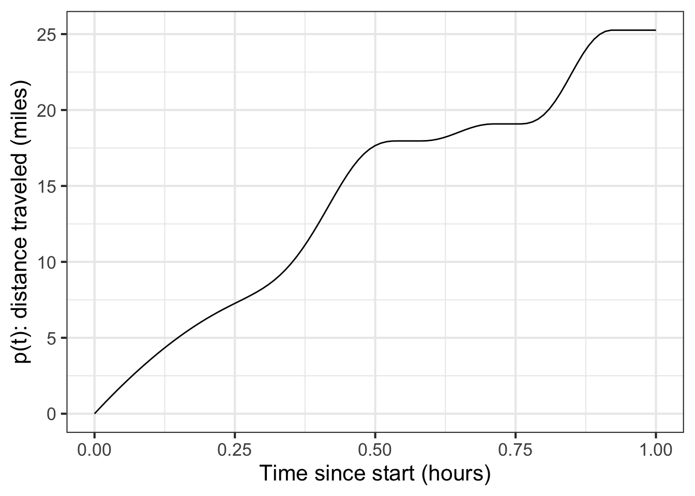
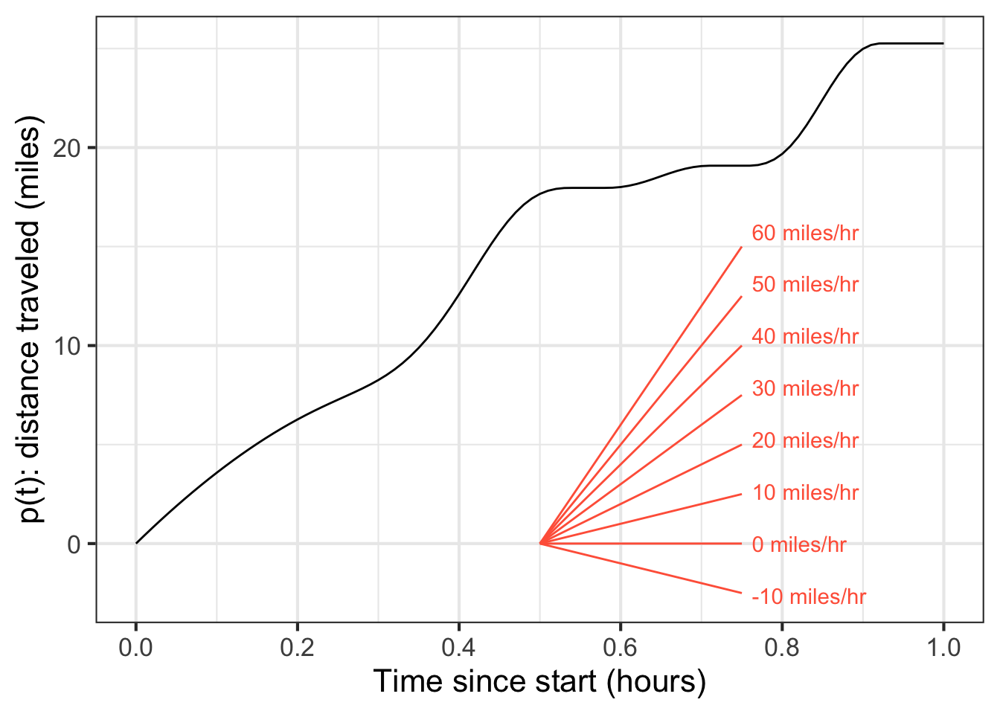
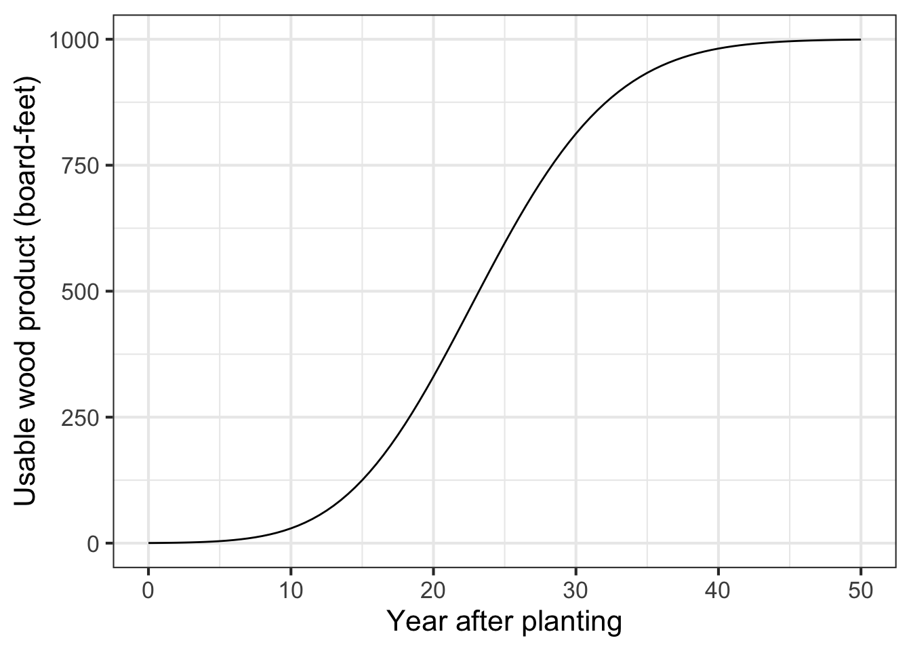

18 Rate of change
Imagine a car trip along a scenic road such as that shown in Figure 18.1. As the trip proceeds, the position varies; position is a function of time. The graph’s horizontal axis marks the elapsed time from the start of the trip. The vertical axis denotes the distance from the starting point.

At the end of the hour’s journey, the car’s position has changed by 25 miles from the start. The rate of change of the car’s position is a ratio: the change in position divided by the change in time: \[\frac{25\ \text{miles}}{1\ \text{hour}}\] Writing this as “25 miles per hour” is more compact, with the small word “per” doing the job of reminding that the quantity was produced by dividing change in position by change in time.
18.1 Outputs versus rates of change
Using functions to describe the car-trip situation, we can say that position is a function of time. We will call it \(p(t)\). The input to the function is time and the output is position.
A rate of change for the function can be calculated by choosing two different values for time and evaluating the function at those times. The evaluation produces two different values for the output position. Calling the two times \(t_0\) and \(t_1\), the corresponding outputs are \(p(t_0)\) and \(p(t_1)\).
The average rate of change of \(p(t)\) over the interval \(t_0 \leq t \leq t_1\) is \[\frac{p(t_1) - p(t_0)}{t_1 - t_0}\ .\] In Chapter ?sec-dimension-and-units we saw that subtraction is legitimate only when the two quantities involved have the same dimension and units. That is the case here. \(p(t_1)\) and \(p(t_2)\) both have dimension L and miles as the unit. \(t_1\) and \(t_0\) both have dimension T and hours as the unit.
The division of \(p(t_1) - p(t_0)\) (dimension L) by \(t_1 - t_0\) (dimension T) is also dimensionally legitimate. The simple reason is that division of one quantity by another is always dimensionally legitimate. The division produces a quantity with dimension L/T.
A quantity with dimension L/T is utterly different than a quantity of dimension L or a quantity of dimension T. In other words, “25 miles per hour” is neither a position nor a time, it is a velocity.
One way to see that velocity is a different kind of quantity than position or time is that you measure the quantities in different ways. You might measure position by noting the passage of a mile marker along the side of the road. You can measure time by reference, say, to your level of boredom or by checking a clock or watch. Divide change in position by change in time to get velocity. But you can also sense velocity directly, by the level of noise in the car or the blurring of nearby objects along the road.
On a graph, you also measure in different ways changes in the input to a function and the corresponding changes in output. As always, start by picking the endpoints of an interval in the domain of the function. As an example, ?fig-stop-and-go-b marks the endpoints of an interval with \(\color{magenta}{magenta}\) dots.
Draw a rectangle connecting the function values at the start and end of the interval. The change in input is the horizontal extent of the rectangle. The change in output is the vertical extent of the rectangle. If “vertical” and “horizontal” are enough to point out that the two measures are of different kinds of things, you will be reminded by your having to use two different scales for the two measurements.

Over the interval marked, the average rate of change of the function is still another kind of perceived quantity, the “slope” of the diagonal of the rectangle. Unfortunately, graphs do not typically include a scale for slope, but we have added a scale to Figure 18.2. From the slope scale, you can easily see that the average rate of change is a little less than 30 miles per hour.
18.2 Slope at a point
With a slope scale, you can dispense with the laborious process shown in ?fig-stop-and-go-b: marking an interval, drawing a rectangle, measuring the vertical change, etc. The slope scale lets you read off the rate of change at a glance: pick a point in the domain, look at the slope of the function at that point, and compare it to the slope scale.
Perhaps you can see that formally defining an interval isn’t an absolute necessity for defining a slope. Instead, you can perceive slope directly from a graph, even if it is hard to quantify without a special scale.
Using the slope scale in Figure 18.3, estimate the function’s slope at input \(t=0.2\). How does it compare to the slope at \(t=0.4\)?

Place a ruler on the function graph so that the rule touches the graph at \(t=0.2\). Keeping that point of contact, vary the slope of the ruler until it neatly aligns with the curve. Now, without changing the slope of the ruler, slide it over to the slope scale and read the ruler slope off that scale. The slope is a bit more than 20 miles per hour.
At \(t=0.4\), the function slope is considerably steeper than at \(t=0.2\), about 60 miles per hour.
The function’s slope at a specific input like \(t=0.2\) is called the instantaneous slope and corresponds to the instantaneous velocity of the car. , you do not have to measure the car’s velocity by reading the change in position over the interval between two distinct moments in time; you can simply look at the speedometer to get an instantaneous read-out of the velocity. We will translate instantaneous rate of change into the language of functions in Chapter Section 19.
18.3 Slope function
Figure -Figure 18.3 shows that the rate of change of the car-position function changes during the trip. In other words, the rate of change of position is itself a function of time.
In general, for a function \(p(t)\) the rate of change function will be \[{\cal D}_t p(t) \equiv \frac{p(t+h) - p(t)}{h}\] where \(h\) is the length of the interval used to compute the rate of change. We will call this the slope function of \(f(t)\).
A fun but unconventional way to display a slope function is to show the literal slope of \(p(t)\) as a function of \(t\) as in Figure 18.4. It represents the value of \({\cal D}_t p(t)\) as the slope of a little line segment. To read off the numerical value of the slope, refer to the slope scale drawn in red. A picture like Figure 18.4 is a good reminder that the slope function \({\cal D}_t p(t)\) is all about the slope of \(p(t)\) and not at all about the actual value of \(p(t)\).
The conventional way to display a slope function is to show the numerical value of the slope by the position on the vertical axis, as in Figure 18.5. Such a graph is easy to read, but provides nothing but the axis label to remind you that the scale on the vertical axis is the slope of another function.
18.4 Average rate of change
In Chapter Section 19, we will start working with the instantaneous rate of change of a function. That concept is so important that you will tend to forget there was any such thing as the “average rate of change” over an interval.
Nevertheless, average rate of change can be a useful concept in many circumstances. To illustrate, Figure 18.6 shows a simplified model of the amount of usable wood harvestable from a typical tree in a managed forest of Ponderosa Pine. (You can see some actual forestry research models here.) Such a model, even if simplified, can provide useful insight for forestry planning.

The overall pattern in ?fig-over-tree is that the tree continues to grow until year 50, when it seems to have reached an equilibrium: perhaps growth goes to zero, or rot balances growth.
If managing a forest for wood production, it seems sensible to try to get as much wood out of the tree as possible. The maximum volume of wood occurs, in ?fig-over-tree, at about year 50. Does that mean that harvesting at year 50 is optimal? If not, when is the best time?
Good forestry practices are “sustainable.” Forests are managed to be continually productive rather than subject to a one-time extraction of value followed by desolation. For sustainability, it is important to consider the life cycle of the forest. After all, continual productivity implies that the forest will continue to produce value into the indefinite future.
One implication of managing for sustainability is that the quantity to optimize is not the volume of wood from a one-time harvest. Rather, it is the rate (per year) at which wood can be sustainably extracted from the forest.
Around year 25, the tree adds usable wood at the fastest instantaneous rate. This might suggest to some that a good time to harvest is near year 25. But, in fact, it makes no sense to harvest at the time of maximum rate of growth; why kill the tree when it is being most productive?
A better quantity to look at for deciding when to harvest is the average rate of growth in the volume of wood. Remember that “average rate of change” is the rate of change over an extended interval. For wood harvesting, the relevant interval is the time from planting until harvest.
Harvesting at year 25 will give a total change of 600 board feet over 25 years, corresponding to an average rate of change of \(600 \div 25 = 24\ \text{board-feet-per-year}\). But if you wait until year 35, you will have about 900 board feet, giving an average rate of change of \(900 \div 35 = 25.7\) board-feet-per-year (L3 T-1).
It is easy to construct a diagram that indicates whether year 35 is best for the harvest. Recall that our fundamental model of change is the straight-line function. So we will model the model of tree growth as a straight-line function. Like the model in Figure 18.6, our straight-line model will start with zero wood when planted. Furthermore, to be faithful to Figure 18.6, we will insist that the straight-line intersect or touch that curve.
Figure 18.7 reiterates the Figure 18.6 model of the tree annotated with several straight-line models that all give zero harvest-able wood at planting time. Each green line represents a scenario where harvest occurs at \(t_1\), \(t_2\), etc. From the perspective of representing the rate of growth per year from planting to harvest, the straight-line green models do not need to replicate the actual growth curve. The complexities of the curve are not relevant to the growth rate. Instead, what’s relevant is the slope of a straight-line model connecting the output at planting time to the output at harvest time. In contrast, the \(\color{magenta}{\text{magenta}}\) curve is not a suitable model because it does not match the situation at any harvest time; it does not touch the curve anywhere after planting!

Choose a harvest time that produces the steepest possible green segment to maximize average lumber volume per year. From Figure 18.7, that steepest line glances the growth curve near year 31 (shown as \(t_3\) in the diagram).
It is best to find the argmax by creating a function that shows explicitly what one is trying to optimize. (In Chapter 24 we will use the name objective function to identify such function.) Here, the objective function is \(\text{ave.growth(year)} \equiv \text{volume(year)} / \text{year}\). See Figure 18.8.
The graph of ave_growth(year) makes clear the maximum average growth from planting to harvest will occur at about year 32.
There is no point waiting until after year 50.
At year 25, the tree is growing as fast as ever. You will get about 600 board feet of lumber.1 Should you harvest at year 25? No! That the tree is growing so fast means that you will have a lot more wood in years 26, 27, etc. The time to harvest is when the growth is getting smaller so that it is not worth waiting an extra year.
18.5 Dimension of a rate of change
The function named \(\partial_t f(t)\) which is the derivative of \(f(t)\) takes the same input as \(f(t)\); the notation makes that pretty clear. Let’s suppose that \(t\) is time and so the dimension of the input is \([t] = \text{T}\).
The outputs of the two functions, \(\partial_t f(t)\) and \(f(t)\) will not, in general, have the same dimension. Why not? Recall that a derivative is a special case of a slope function, the instantaneous slope function. It is easy to calculate a slope function:
\[{\cal D}_t f(t) \equiv \frac{f(t+h) - f(t)}{h}\] The dimension of the quantity \(f(t+h) - f(t)\) must be the same as the dimension of \(f(t)\); the subtraction would not be possible otherwise. Likewise, the dimension of \(h\) must be the same as the dimension of \(t\); the addition \(t+h\) wouldn’t make sense otherwise.
Keep in mind that the dimension \([f(t+h) - f(t)]\) will be the same as \([f(t)]\). Why? The result of addition and subtraction will always have the same dimension as the quantities being combined.
Whereas the dimension of the output \(f(t)\) is simply \(\left[f(t)\right]\), the dimension of the quotient \(\frac{f(t+h) - f(t)}{h}\) will be different. The output of the derivative function \(\partial_t f(t)\) will be \[\left[\partial_t f(t)\right] = \left[f(t)\right] / \left[t\right] .\]
Suppose \(x(t)\) is the position of a car as a function of time \(t\). Position has dimension L. Time has dimension T. The function \(\partial_t x(t)\) will have dimension L/T. Familiar units for L/T are miles-per-hour, which you can recognize as velocity.
Another example: Imagine a function pressure() with that takes altitude above sea level (in km) and output pressure (in kPa, “kiloPascal”).2 The derivative function, let’s call it \(\partial_\text{altitude} \text{pressure}()\), also takes an input in km, but produces an output in kPA per km: a rate.
18.6 Drill

Part 1 What is the average rate of change of the function in Figure 18.9 on the interval \(-5 < t < 5\)? (Choose the closest answer.)
0.5 1 1.5 2
Part 2 Consider the average rate of change of the function in Figure 18.9 on the interval \(-2 < t < 2\). Which of these statements best describes that average rate of change.
- very close to 1/2
- slightly less than 1
- slightly greater than 1
- very close to 2
18.7 Exercises
Exercise 17.02
Each of the plots shows the graph of a function. Two specific inputs, labelled \(A\) and \(B\), are marked.

Part A In plot (1), what is the rate of change over the interval \(A\) to \(B\)? (Pick the closest answer.)
-15/2 15/2 2/15 -2/15 8/2 -8/2 2/8 -2/8 -15/5

Part B In plot (2), what is the rate of change over the interval \(A\) to \(B\)? (Pick the closest answer.)
-17/2 2/17 -10/2 10/2 2/10 -2/10 -17/-5

Part C We haven’t told you exactly how to do this yet, but give it a try. What is the rate of change near the point marked \(C\)? (Pick the closest answer.))
-1/2 -1 -2 -3 -3/2 -4 -5
Exercise 17.04
From the graph in ?fig-water-average, compute the average rate of change over the interval \(10 \leq t \leq 200\). How does it compare to the average rate of change over the interval \(10 \leq t \leq 125\)?
Exercise 17.05
We will be working extensively with the change in output value of a function when the input value changes.
The change in the output value of a function \(f()\) when the input changes from \(x = a\) to \(x = b\) is \[f(x=b) - f(x=a)\] Notice that when we talk about the change from \(x=a\) to \(x=b\) we subtract \(f(a)\) from \(f(b)\). That change is sometimes called the rise in the value of the function. Rise always compares (by subtraction) the two output values corresponding to two specific input values. Remember that \(a\) and \(b\) stand for specific numbers.
Corresponding with the idea of the change in output being \(f(b) - f(a)\) the change in the input value to a function is \(b - a\). This is often called the run in the value of the input.

Part A True or false: In Graph I, the rise from a to b is positive.
TRUE FALSE
Part B True or false: In Graph I, the run from \(x=a\) to \(x=b\) is positive.
TRUE FALSE

Part C True or false: In Graph II, the run from a to b is positive.
TRUE FALSE
Part D True or false: In Graph II, the rise from a to b is positive.
TRUE FALSE
Part E True or false: In Graph II, the run from b to c is positive.
TRUE FALSE
Part F True or false: In Graph II, the rise from b to c is positive.
TRUE FALSE
Part G For an interval [2, 6] what is the value of the run? (The answer is independent of any particular graph/function.)
4 -4
Part H Which is the run of the interval [6, 2]? (Again, the answer is independent of any particular graph/function.)
4 -4
Exercise 17.06
Open an R sandbox. You can use these function definitions to help you in your calculations. ::: {.cell layout-align=“center” fig.showtext=‘false’}
f <- makeFun(2*exp(x+1) ~ x)
g <- makeFun(3*exp(-x) ~ x)
h <- makeFun(x*exp(x) ~ x):::
Using R, compute the average rate of change of the function over the given interval. Choose the closest answer for each problem.
Part A \(f(x) \equiv 2 e^{x+1}\) over [-2, 2]
-2.99 1.54 2.72 4.68 9.85 11.32
Part B \(g(x) \equiv 3 e^{-x}\) over [-1, 1.5]
-2.99 1.54 2.72 4.68 9.85 11.32
Part C \(h(x) \equiv x e^x\) over [0, 1]
-3 1.54 2.72 4.68 9.85 11.32
It is much less work if we use the R function c() to define the interval, and the R function diff() to calculate differences. The next sandbox contains an example asking you to compute the average rate of change of \(f(x) \equiv e^x\) over the interval [0, 4]. You only need lines 1, 3, and 5. The other lines show intermediate results to help you understand what diff() is doing.
interval <- c(0, 4) # creates the interval
diff(interval) # calculate the run
f <- makeFun(exp(x) ~ x) # create the function
f(interval) # evaluate function at the endpoints of the interval
diff(f(interval)) / diff(interval) # complete answerPart D True or false: The average rate of change of \(f(x) \equiv e^{x^2}\) over [0.0, 0.1] is 0.1005017
TRUE FALSE
Part E True or false: The average rate of change of \(f(x) \equiv \log(x)\) over [2, 3] is 0.5062353.
(Hint: Change the code above so the interval goes from 2 to 3 and f becomes the function \(f(x) \equiv \log(x)\))
TRUE FALSE
Part F True or false: The average rate of change of \(f(x) \equiv \sin(x)\) over [0.0, 0.5] is 0.9588511
TRUE FALSE
Exercise 17.07
Consider the sinusoid function, graphed below.

Part A What is the average rate of change over the interval \(0 < x < \frac{1}{2}\)? (Choose the closest value.)
0 0.5 1
Part B What is the average rate of change over the interval \(0 < x < 6.25\)? (Choose the closest value.)
-0.5 0 0.5
Part C What is the average rate of change over the interval \(0 < x < 10\)? (Choose the closest value.)
-0.05 -0.5 0 0.5
Exercise 17.08
For each of the following, compute the average rate of change of the function over the given interval.
Part A The average rate of change of \(f(x) \equiv x + 5\) over [3, 5] is
-2 -1 1 2
Part B The average rate of change of \(f(x) \equiv 3 - 2 x\) over [-4, -2] is
-4 -2 0 1 2 4
Part C The average rate of change of \(f(x) \equiv -3 x^2\) over [0, 4] is
-24 -12 0 1 2 12 24
Part D The average rate of change of \(f(x) \equiv x^3 - 2 x + 1\) over [0, 2] is
-2 1.5 2 7 10
Exercise 17.09
In this question, we ask you to estimate the slope from a graph of the function. But the function is exponential, so not a straight line.
A fundamental idea in calculus is that even a function with a curved graph, if you zoom in closely around a given point, will look like a straight line. And you know how to calculate the slope of a straight line.
When the graph is curved, the slope will be different at different points along the graph. So there is not a single slope for the function. Still, we can talk about the “slope at a point.”
One way to specify a point on a function’s graph is to give the horizontal coordinate: the input to the function. But here we will give you the output of the function. So long as the function passes the horizontal-line test, as the exponential does, specifying any particular output in the function’s range uniquely identifies a corresponding input.
Estimate the slope of the exponential function \(g(x) \equiv e^x\) at several inputs, which we will call \(x_1\), \(x_2\), \(x_3\) and \(x_4\). We won’t give you numerical values for the \(x_i\) points, but we will tell you the output of the function at each of those inputs. the values of \(x\) where:
- \(g(x_1) = 1\)
- \(g(x_2) = 5\)
- \(g(x_3) = 10\)
- \(g(x_4) = 0.1\)
For each of (a)-(d), use a sandbox to plot the exponential function \(e^x\) on a domain zoomed in around around the appropriate value of \(x_i\). Then calculate the slope of the curve at that \(x_i\).
Part A Using your answers for the slope at the points given in (a)-(d), choose the best answer to this question: What is the pattern in the slope as \(x\) varies?
- The slope at each value \(x_i\) is the same as \(e^{x_i}\).
- The slope at each value \(x_i\) is the same as \(x_i\).
- The slope at each value of \(x_i\) is the same as \(x_i^2\).
- The slope at each value of \(x\) is the same as \(\sqrt{x}.\)
Exercise 17.10
For each exercise, you are given a series of intervals that get smaller and smaller. Your job is to calculate the average rate of change of the function \(f(x) \equiv x^2\) for each of the intervals. As the width of the intervals approach zero, our average rates of change become better approximations of the instantaneous rate of change. You should use the results you calculate to make an informed estimate of the instantaneous rate of change.
interval <- c(__start__ , __end__ )
f <- makeFun(x^2 ~ x)
diff(f(interval)) / diff(interval)A. Use these three intervals to estimate the instantaneous rate of change \(\partial_x f(x=3)\) - [3, 3.1] - [3, 3.01] - [3, 3.001]
B. Use these three intervals to estimate the instantaneous rate of change \(\partial_x f(x=5)\) - [4.9, 5] - [4.99, 5] - [4.999, 5]
C. Use these three intervals to estimate the instantaneous rate of change \(\partial_x f(x=-2)\) - [-2, -1.9] - [-2, -1.99] - [-2, -1.999]
Exercise 17.12
There is a web of connections between the pattern-book functions and their slopes.
Part A 1. Which pattern-book function has a slope function that is simply a input-shifted version of itself? (For small enough \(h\).)
exponential sinusoid logarithm power-law \(x^{-1}\)
Part B 2. Which pattern-book function has a slope function that is identical to itself? (For small enough \(h\).)
exponential sinusoid logarithm power-law \(x^{-1}\)
Part C 3. Which pattern-book function has a slope function that is another pattern-book function? (Hint: The other function is also listed among the choices.)
exponential sinusoid logarithm power-law \(x^{-1}\)
Exercise 17.13
Sometimes a bit of algebra can help us see what’s going on with the instantaneous rate of change. Consider the exponential function \(e^x\).
Rather than writing the slope function definition with a 0.1, let’s substitute in the symbol \(h\). This gives \[{\cal D}\exp(x) = \frac{e^{x+h} - e^x}{h}\] Extracting out the common term \(e^x\) in the numerator, we arrive at \[{\cal D}\exp(x) = e^x \left[\frac{e^h - 1}{h}\right]\] Since \(h\) is a number, \([e^h - 1]/h\) is a number, not a function of \(x\). So, for any given value of \(h\), the slope function of the exponential is proportional to the exponential itself.
Part A Using a sandbox, find the value of \([e^h - 1]/h\) when \(h=0.1\). Which of these is it?
1.271828 1.694343 1.718282 e = 2.718282
The instantaneous rate of change involves making \(h\) very small, but not quite zero. If you make \(h\) exactly zero, the result will be ambiguous.
Part B Using a sandbox, compute \([e^0 - 1]/0\). What’s the result?
InfNaNBogus- An error message result.
Part C Using a sandbox, compute \([e^h - 1]/h\). Make \(h\) as small as you can, for instance \(0.00001\) or \(0.00000001\). What’s the result?
- 1
- It varies with \(h\), but is always around 1.5 for \(h\) small enough
- There is no particular result.